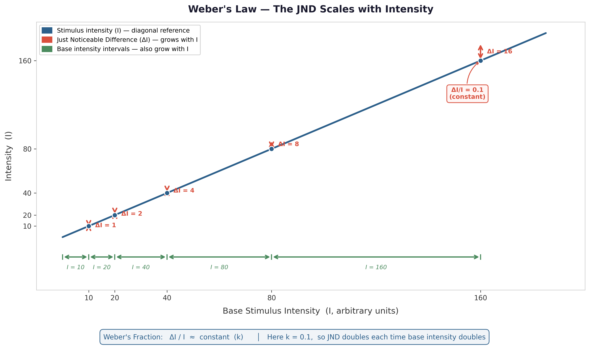

Sensation & Perception
"Your eyes work like a camera: they record the world exactly as it is, and your brain just plays the recording back."
This is an easy thing to believe, because vision does not feel like work. You open your eyes and the world is simply there — sharp, colored, three-dimensional, already organized into objects and distances. There is no felt sense of construction, no moment where you can catch your brain in the act of building the scene. Compare that to, say, solving a math problem, where you can feel yourself working through steps. Seeing feels immediate. So it is natural to assume that what you experience is a more or less direct transcript of what is actually out there.
It is not. Two simple demonstrations make this concrete before we ever get to the underlying mechanism.
- First: your retina has a blind spot — a region with no photoreceptors at all, where the optic nerve exits the eye — yet you do not see a hole in your visual field, because your brain fills it in with a plausible guess based on the surrounding pattern. A camera with a dead patch of sensor would simply show a dead patch; your visual system edits the dead patch out and shows you something that was never actually sensed. (You can find your own blind spot and watch this filling-in happen directly: Ch. 4 Interactive Labs → Blind Spot and Perceptual Filling-In.)
- Second: read the phrase in this sentence quickly, out loud, instead of slowly word by word, and see see if you notice anything unusual about it. Most readers do not catch the repeated word on the first pass, because the brain expects the sentence to make sense and skips over evidence that it does not. A beginning reader sounding out each word individually is far more likely to catch the error.
Both demonstrations point at the same conclusion: your visual system is not a passive recorder. It is constantly filling gaps, editing out anomalies, and making confident guesses about what is probably there — using a mix of the raw input and what you already expect to see.
The evidence for this goes well beyond a couple of clever tricks; it is one of the organizing distinctions of this entire chapter, between processing that is purely bottom-up (built from the raw data) and processing that is top-down (shaped by expectation, memory, and context). A camera only does the bottom-up part. Your visual system does both, constantly, and it is often impossible to tell from the inside which parts of your experience came from the world and which parts your brain supplied on its own.
Later in this chapter, we will use a genuinely modern version of the camera-versus-brain comparison — a car that is marketed as having "vision" — to make this distinction concrete, because the engineers who built that system ran headfirst into the exact same problem your visual system solves every waking second. The upshot, which this chapter will return to again and again: perception is not a recording of the world — it is an active prediction about it, continuously tested against incoming data and revised when wrong.
Where This Fits
Chapter 3 explained how a neuron generates an electrochemical signal; this chapter is about how that same basic mechanism gets aimed at the outside world. Every sense organ in this chapter — retina, cochlea, skin — is, at bottom, doing the same job: converting one kind of physical energy into the neural signaling Chapter 3 already covered, then handing the result to a brain that has to make sense of it. That second step turns out to be far more active and inference-driven than common sense suggests, which is why the chapters ahead lean on this one constantly: selective attention and the famous "cocktail party effect" (Chapter 5) are really questions about which sensations get promoted to conscious perception, and the constructive, expectation-driven nature of perception introduced here previews the equally constructive nature of memory (Chapter 8) — what never gets perceived in the first place can never be remembered later.
Learning Objectives
- Differentiate sensation from perception, and explain transduction as the physical process common to every sense organ.
- Define absolute threshold and difference threshold (Weber's Law), and apply signal detection theory to a real-world detection problem involving uncertainty.
- Describe how the visual and auditory systems transduce light and sound, and identify the major structures involved in each process.
- Explain why trichromatic theory and opponent-process theory of color vision are complementary rather than competing, and apply the same logic to place theory and frequency theory of pitch perception.
- Distinguish top-down from bottom-up processing, and explain how perception actively constructs experience — through predictive coding's continuous testing of expectations against sensory input, and through the Gestalt principles and perceptual constancy that organize incomplete sensory input into a stable whole (APA IPI Theme 5: our perceptions and biases can be inaccurate).
- Explain the gate control theory of pain as a case where a "purely physical" sensation turns out to be shaped by signals descending from the brain.
- Use an evolutionary trade-off framework to explain why sensory systems prioritize useful change over maximal sensitivity.
Section 1: The Basics — Detecting a Changing World
Before anything else, this chapter needs one foundational distinction in place, because almost everything else builds on it.
- Sensation is the physical process by which a sense organ responds to a stimulus and converts it into a neural signal — light hitting your retina, a sound wave reaching your eardrum, or a chemical binding to a receptor on your tongue.
- Perception is the psychological process of organizing and interpreting that signal so that it becomes a meaningful experience — recognizing the light pattern as your friend's face, the sound as your name being called, or the taste as the coffee you ordered.
Sensation begins with receptor transduction at the sense organ; perception emerges as the nervous system organizes and interprets those signals — a process that starts surprisingly early. The retina and cochlea both do real preprocessing before a signal ever reaches the brain, and interpretation continues through many stages rather than occurring in one final “perception step.”
Diagnostic question: a person with a particular kind of brain damage can have completely normal eyes, an intact retina, and a fully functional optic nerve — every sensory component working — yet be unable to recognize faces, a condition called prosopagnosia. Is this a deficit of sensation or of perception? (Perception: the sensory machinery delivering the raw signal is intact; the breakdown is in the brain's later interpretation of that signal.)

A useful starting question for this whole chapter, and one that fits the evolutionary lens this course keeps returning to, is: why does any organism sense anything at all? The answer is not "to have rich experiences" — it is that detecting relevant changes in the environment, and doing almost nothing else, is what kept your ancestors' ancestors alive long enough to have ancestors of their own. That framing explains a cluster of basic principles that hold across every sense organ we will cover in this chapter, human or otherwise.
The first principle is that detection has a floor. Each sense organ requires some minimum amount of stimulation before it registers anything at all — your eyes will not respond to an arbitrarily faint light, and your ears will not respond to an arbitrarily quiet sound. Researchers call this minimum the absolute threshold, formally defined as the smallest amount of stimulation needed for a person to detect a stimulus 50% of the time (not 100%, because detection at very low intensities is probabilistic, not all-or-nothing, and varies from moment to moment depending on fatigue, attention, and what you were just exposed to). Human sensory capability at this floor is genuinely remarkable: under ideal dark conditions, the human eye can detect the equivalent of a candle flame burning some 30 miles away, and under ideal quiet conditions, the human ear can detect a watch ticking from 20 feet away (Galanter, 1962).
Detecting whether something is there is one problem. Detecting whether something changed is a related but separate problem, and it follows a different rule. Pick up a 1-pound weight, then a 2-pound weight — the difference is obvious. Now pick up a 10-pound weight, then an 11-pound weight — also a 1-pound difference, but it is much harder to notice. This is Weber's Law: the smallest detectable difference between two stimuli — the difference threshold, or just noticeable difference (JND) — is not a fixed amount, but a roughly constant proportion of the original stimulus's size (Weber, 1834; formalized by Fechner, 1860). A bigger stimulus needs a bigger absolute change before the difference registers, even though the proportional change required stays about the same. You can feel this directly: try the Weber's Law demo in the Ch. 4 lab.
{kind=link}

Before reading on — in your own words, what is the difference between an absolute threshold and a difference threshold, and how does Weber's Law connect to the second one?
Both of these thresholds — and the everyday experience of uncertain detection in general — are studied using a framework called signal detection theory, which formalizes something every one of us has actually lived through: deciding whether a faint stimulus was really there, under conditions where you cannot be certain. Imagine you are waiting for an important text message and you feel your phone vibrate in your pocket — except it turns out there was no message. Signal detection theory gives this experience precise vocabulary.
- A hit is correctly detecting a stimulus that was actually present.
- A miss is failing to detect one that was present.
- A false alarm is reporting a stimulus that was not actually there — the phantom vibration.
- A correct rejection is correctly reporting that nothing was there.
Critically, signal detection theory recognizes that your willingness to report “yes, I detected it” — your decision criterion — is separate from your actual sensory sensitivity. The criterion shifts depending on the cost of getting it wrong.
A radiologist scanning for a tumor and a teenager waiting for a crush to text back are running the same basic detection process, with very different criteria for how much ambiguous evidence is enough to say “yes.”
Think of a recent time you thought you sensed something — a phantom phone vibration, hearing your name called in a noisy room, seeing movement out of the corner of your eye — that turned out not to be there. Using signal detection theory's vocabulary, was that a false alarm, and what do you think your decision criterion was doing in that moment?
Adjust a detection criterion and watch how your hit rate and false-alarm rate trade off against each other: Ch. 4 Interactive Labs → Signal Detection.
| Stimulus was present | Stimulus was absent | |
|---|---|---|
| Said "yes, detected" | Hit | False alarm |
| Said "no, not detected" | Miss | Correct rejection |

Finally, sensory systems generally respond most strongly when stimulation changes and less strongly when it remains constant. This decline in responsiveness is called sensory adaptation. Some receptors adapt rapidly and may become nearly silent during continued stimulation; others continue firing at a reduced or sustained rate. That division lets the nervous system represent both change and persistence. Sensory adaptation is why you stop noticing the pressure of your clothing and why a steady background odor or hum gradually fades from awareness, even though the stimulus is still present (Privitera, 2026).
From an evolutionary standpoint, prioritizing change over constancy makes sense: a constant stimulus usually carries less new information than one that has just appeared or shifted. Devoting limited processing resources to monitoring it continuously would be a poor use of a metabolically expensive nervous system. What is worth your attention is what changes — which is exactly what the rest of this chapter's machinery is built to catch.
Section 2: Vision — From Photons to Faces
Light is, by a wide margin, the sense this course (and most introductory psychology courses) spends the most time on, partly because human vision is unusually well studied and partly because an enormous fraction of the cortex — by some estimates, nearly a third — is devoted to processing it (Buetti & Lleras, 2026). The story starts with transduction: the conversion of one form of energy into another, which is the job every sense organ in this chapter performs in its own way. For vision, that means converting photons of light into the electrochemical signal Chapter 3 already described.
Light enters the eye through the pupil, gets focused by the lens onto the retina — a thin layer of light-sensitive tissue lining the back of the eyeball — and is transduced there by two types of photoreceptor cells.
- Rods are extremely sensitive to dim light and support night vision, but they do not provide color or fine detail. They are concentrated in the retinal periphery and nearly absent from the center.
- Cones require more light but support color vision and sharp detail. They are densely packed in the fovea, the small central region you are using right now to read this sentence (Privitera, 2026).
This is why a dim star seems to vanish if you stare directly at it — you are aiming your cone-dense fovea at it, when the rods in your peripheral retina would actually detect it better — and why you cannot read fine print using only your peripheral vision, no matter how hard you try.

Depth perception draws on cues that require both eyes (binocular cues) and cues that work with just one (monocular cues):
| Cue | Eyes needed | What changes | Try it yourself |
|---|---|---|---|
| Binocular disparity | Two | Each retina receives a slightly different 2D image; the brain combines them into a 3D percept | Hold a finger about a foot from your face and close one eye at a time — the finger appears to jump sideways relative to the background |
| Convergence | Two | Both eyes rotate inward as an object gets closer | Watch a friend's eyes as they focus on something you move toward their nose |
| Accommodation | One | The eye's lens changes shape to keep a close object in focus | Hold a pencil at arm's length, focus on its tip, and slowly bring it toward your nose while staying focused — you will feel a distinct strain as the lens works harder |
All three cues above rely on your eyes' own physiology — muscle strain, or comparing two slightly different images. A second family of monocular cues is purely pictorial: it requires no eye movement or binocular comparison at all, which is why a flat photograph or painting can look three-dimensional even though it delivers no disparity, no convergence, and no accommodation change beyond focusing on the page itself.
| Pictorial cue | What it is | Where you see it |
|---|---|---|
| Relative size | Of two objects known to be similar in actual size, the one casting a smaller retinal image is perceived as farther away | Two identical cars drawn at different sizes in an illustration read as near and far, not large and small |
| Interposition | An object that partially blocks another is perceived as closer | Overlapping playing cards — the covered card always reads as behind |
| Linear perspective | Parallel lines appear to converge as they recede into the distance | Railroad tracks or a long hallway narrowing toward a vanishing point |
| Texture gradient | Surface texture appears denser and finer-grained with distance | A gravel road looks coarse nearby and smooths out toward the horizon |
| Relative height | Objects positioned higher in the visual field (below the horizon line) are perceived as farther away | Trees near the top of a photographed field read as more distant than trees near the bottom |
| Shading and shadow | Patterns of light and shadow imply three-dimensional form | A circle shaded darker on one side reads as a sphere rather than a flat disk |
| Motion parallax | Objects closer to a moving observer sweep across the visual field faster than distant objects | Looking out a moving car's side window, fence posts blur past while distant mountains barely shift |
All ten cues are genuinely available to try right now, and accommodation and motion parallax in particular are ones you can feel or watch directly, not just reason about abstractly.
Question: Does visual cortex respond to light in general, or do individual neurons respond to particular features?
Method: Hubel and Wiesel recorded single neurons in cats' primary visual cortex while presenting bars of light at different positions and orientations (Hubel & Wiesel, 1962). In later experiments, they temporarily deprived young kittens of patterned input through one eye and then examined how visual cortex represented each eye (Hubel & Wiesel, 1970).
Key finding — feature detectors: Individual neurons responded selectively to particular edges and orientations in particular regions of the visual field. Visual cortex did not merely register that light was present; it extracted structured features from the scene.
Key finding — critical periods: When one eye was deprived early in development, cortical representation shifted toward the open eye even though the deprived eye itself remained anatomically intact. Normal sensory input was required during a critical period for the cortex to organize normally.
Why it matters: Together, the findings show that perception depends on identifiable neural computations and on experience-dependent development. The visual system is not a camera sensor wired completely in advance. It extracts features, and experience helps determine how the cortical machinery performing that extraction is organized.
What did the feature-detector experiments show that the deprivation experiments did not — and what did the deprivation experiments add?
Color vision raises a puzzle that took roughly a century to resolve. The leading early account, trichromatic theory (Young, 1802; von Helmholtz, 1867), proposed that color perception depends on three types of cones, each maximally sensitive to a different wavelength range — informally, “red,” “green,” and “blue” cones — with every color you see produced by some combination of how strongly each type fires. This theory explains a great deal, including why mixing three colored lights of adjustable intensity can reproduce nearly any color the eye can perceive (the same principle behind every pixel on the screen you may be reading this on). What trichromatic theory cannot explain is the afterimage effect: stare at a brightly colored image for thirty seconds, then look at a plain white surface, and you will see a ghostly image in the opposite colors — red where there was green, yellow where there was blue.
Opponent-process theory (Hering, 1892) explains the second phenomenon. Downstream neural channels, beginning in retinal circuits, compare cone outputs in opposing dimensions — red versus green, blue versus yellow, and light versus dark. Color is therefore represented not only by how strongly each cone type responds, but also by differences between cone signals. This is why afterimages appear in opponent colors and why reddish-green and bluish-yellow are not normally perceived as ordinary color mixtures.
Trichromatic and opponent-process theories are not rivals. They describe complementary stages of the same system: three cone classes first sample wavelength information; downstream circuits then compare those signals in opponent channels.
!["Two Stages of Color Vision." Left panel (Stage 1: Trichromatic Theory — The Eye): incoming light activates three cone photoreceptor types with different sensitivity curves; cones send separate signals to the brain about how much light of each type is present. Right panel (Stage 2: Opponent-Process Theory — The Brain): opponent channels compare cone signals in red/green, yellow/blue, and light/dark pairs. Key idea label: Stage 1 measures light with three cone types; Stage 2 constructs color by comparing opponent pairs. Together they let you see millions of colors and shades.](../images/ch04/ch04_color_vision_two_stage_model_v1.png)
The next time you notice an afterimage — after looking at a bright window, a camera flash, or a brightly lit screen in a dark room — try to name the color of the afterimage before you have read this section again from memory. Does it match what opponent-process theory predicts?
Section 3: Perception as Prediction — How the Brain Builds an Experience
Section 1 introduced bottom-up and top-down processing through two quick demonstrations. Here is the formal distinction.
- Bottom-up processing builds a percept from incoming sensory data, assembling simple features into increasingly complex representations.
- Top-down processing uses existing knowledge, expectations, goals, and context to shape how that input is interpreted (Privitera, 2026).
Both operate together. An experienced radiologist and an untrained viewer receive the same image, but the radiologist's learned expectations change which patterns become meaningful. Expertise does not alter the pixels. It alters what the visual system can extract from them.
One influential account of this interaction is predictive coding. Higher brain areas generate predictions about likely input, while lower areas return information about mismatches — prediction errors — between what was expected and what arrived (Rao & Ballard, 1999). On this account, perception is less like reading a message and more like sending a draft and receiving tracked changes. The brain proposes an interpretation; sensory evidence corrects it.
!["Perception Is a Prediction Loop." A five-step circular diagram: (1) World — the external world is rich and complex, we never get all of it; (2) Sensory Evidence — our senses provide partial, noisy input; (3) Prediction Error — what came in is compared with what was expected; mismatch produces prediction error; (4) Prediction — the brain's best current guess about the world; top-down predictions shape early processing; (5) Perception — the updated model becomes your conscious experience and guides your actions; predictions generate our percepts and guide our actions. Actions change the world and produce new sensory input, keeping the loop going. Bottom label: "Not a recording — a controlled guess. Perception is an active, ongoing process of prediction, testing, and updating, constrained by sensory evidence."](../images/ch04/ch04_perception_prediction_loop.png)
Anil Seth calls perception a “controlled hallucination”: a best guess constrained, but not completely dictated, by sensory input (Seth, 2021). The phrase captures what the camera metaphor misses — perception is generative as well as receptive. It is worth being clear, though, that predictive coding is a theoretical framework with strong empirical support in some domains, not a fully settled account of all perception.
Ambiguous input shows why the distinction matters. In the viral 2015 image known as the dress, viewers tend to settle into one of two percepts: white and gold or blue and black. The pixels do not change. What changes is the visual system's assumption about the light illuminating the dress. If the scene is interpreted as blue shadow, the brain discounts blue and the dress appears lighter and warmer. If the scene is interpreted as warm illumination, the dress appears darker and bluer (Brainard & Hurlbert, 2015).
Watch how the same ambiguous stimulus flips depending on the surrounding context your brain supplies: Ch. 4 Interactive Labs → Context Changes Perception.
The claim concerns the shared image file, not perfectly identical retinal stimulation. Screens, ambient light, and individual eyes still differ. The point is narrower and stronger: ambiguity in the input allows different interpretations to become stable.
Tesla Vision is useful because it exposes the sensation–perception distinction in machine form. Tesla describes Full Self-Driving (Supervised) as using camera inputs and neural networks to build a model of the vehicle's surroundings and guide decisions (Tesla, n.d.). The cameras do not deliver a finished scene. The system must transform visual input into a task-relevant representation, and it can register an object while still interpreting it incorrectly.
The parallel should not be pushed too far. Human priors are shaped by individual developmental history, and what receives weight shifts with context and attention. The point is not that Tesla uses predictive coding or that machine and biological vision share one mechanism. The point is that sensing is not yet perceiving.
Two additional principles describe how perception produces a stable, usable world from incomplete input: Gestalt organization and perceptual constancy.
Gestalt organization begins from the observation that the perceived whole is not simply the sum of isolated sensory parts. The governing meta-principle, Prägnanz, is that the visual system tends toward a simple, stable organization. This is a form of compression: fragmented edges, gaps, and movements are grouped into a manageable scene.
- Figure-ground organization separates a focal object from its background. Ambiguous images can support more than one assignment, as in the vase-or-faces illusion.
- Proximity groups elements that are close together.
- Similarity groups elements that share features such as shape, color, or orientation.
- Good continuation favors smooth paths over abrupt, disconnected changes in direction.
- Closure completes an incomplete figure when the available parts strongly imply a whole.
- Common fate groups elements that move together. A camouflaged animal can remain hidden while still, then become immediately visible when its parts move as one.
These principles describe perceptual organization; they do not by themselves prove predictive coding. They do, however, reinforce the broader point that the visual system actively organizes incomplete input rather than waiting for a finished picture.
![Six-panel figure illustrating Gestalt principles of perceptual grouping. Proximity: two tight clusters of dots perceived as two separate groups. Similarity: a grid of alternating circles and squares perceived as columns by shape. Figure-Ground: a white vase silhouette on a dark background that can also be perceived as two facing profiles. Closure: three Pac-Man shapes arranged so the gaps imply a white triangle that is not actually drawn (Kanizsa triangle). Good Continuation: an ambiguous X shape shown alongside the same shape with upper arms highlighted in gold and lower arms in dark, illustrating the kinked interpretation that good continuation prevents you from perceiving. Common Fate: two clusters of dots with arrows — one cluster moving upward, one downward — perceived as two separate groups because elements share a common direction of motion.](../images/ch04/fig_gestalt_principles_original.png)
Perceptual constancy is the tendency to perceive an object as stable even while its retinal projection changes. A door swinging open projects a changing trapezoid, but you perceive one rectangular door rotating in space. A person walking away produces a shrinking retinal image, but you do not perceive the person as physically shrinking. The visual system uses distance and context to infer that the object remains stable while the viewing conditions change.
Lift two objects of equal weight but different sizes and notice how your expectation changes how heavy they feel. Practice this in the size-weight illusion lab when available.
Perceptual Disorders — When Construction Breaks Down
If perception is constructed across multiple stages, damage at different stages should produce different failures.
Visual agnosia is difficulty recognizing objects despite intact basic vision. A person may see edges, colors, and shapes yet fail to assemble them into a recognized object (Lissauer, 1890). Prosopagnosia is a more selective deficit in recognizing familiar faces despite otherwise adequate vision and, in many cases, preserved recognition of nonface objects. These conditions separate sensation from later interpretation.
Charles Bonnet syndrome shows a different failure. People with substantial visual loss may experience vivid visual hallucinations while retaining insight that the images are not real (Teunisse et al., 1996). Reduced visual input appears to release or destabilize activity in visual association systems. Predictive coding offers one possible interpretation — expectations are less constrained by incoming evidence — but it is not the only account.
These disorders make perceptual construction visible by showing how it can fail. They are consistent with predictive coding, but they do not prove it.
Section 4: Hearing and the Body Senses
Sound waves are funneled by the outer ear into the auditory canal, vibrate the eardrum, and are amplified by three tiny bones before reaching the fluid-filled cochlea. Within the cochlea, movement of the basilar membrane bends hair cells and converts mechanical vibration into neural activity (Privitera, 2026). Pitch is represented through two complementary kinds of information.
- Place theory holds that pitch depends partly on where activity peaks along the basilar membrane. High frequencies peak nearer the base; lower frequencies peak farther toward the apex.
- Frequency theory, more precisely called temporal coding, holds that pitch also depends on the timing pattern of auditory-nerve firing. At lower frequencies, neural firing can phase-lock to the sound wave. Individual neurons do not need to fire on every cycle; groups of neurons can share the timing burden through the volley principle.
Temporal coding becomes less precise as frequency rises, while place coding becomes increasingly informative. The auditory system therefore uses both mechanisms rather than choosing between two rival theories.
Diagnostic question: a sound is so low in pitch that the basilar membrane fails to show a sharp peak anywhere along its length, yet listeners can still identify the pitch accurately. Which mechanism is doing the work, place or frequency? (Frequency — this is precisely the low-frequency range where temporal coding compensates for place theory's breakdown.)
Before moving on — in one sentence each, what does place theory explain well, and what does frequency theory explain well, about pitch perception?
![Instructional infographic titled "Pitch Is Coded in Two Ways." Top section shows a cutaway cochlea and an unrolled basilar membrane, labeled with frequency regions from high-frequency at the base to low-frequency at the apex, illustrating place theory. Bottom section shows waveform examples with neural firing patterns that follow the timing of lower-frequency sounds, illustrating temporal coding. Labels identify the scala vestibuli, scala tympani, Organ of Corti, basilar membrane, hair cells, and auditory nerve.](../images/ch04/fig_cochlea_place_frequency_pitch.png)
Somatosensation: Touch, Temperature, and Pain
The skin, the body's largest sense organ, transduces touch, temperature, and potentially damaging stimulation through specialized receptors. Mechanoreceptors respond to touch and pressure, thermoreceptors to temperature, and nociceptors to stimuli associated with actual or threatened tissue damage.
These signals travel through the spinal cord and thalamus to cortical systems that include a somatotopic map — an organized representation of the body surface. Sensitive regions such as the lips and fingertips occupy more cortical territory than less sensitive regions such as the shoulder (Penfield & Rasmussen, 1950).
Pain deserves special attention because it shows why an unpleasant sensation can still be adaptive. Without pain, an organism would lack an urgent signal to withdraw from injury and protect damaged tissue. People born with rare conditions that severely reduce pain perception accumulate repeated injuries precisely because that warning system is missing.
For most of the twentieth century, the dominant model of pain treated it as a simple, direct wire from injury to brain: more tissue damage, more pain, full stop. This model could not explain a long list of real clinical observations — soldiers with severe battlefield wounds who reported little pain in the moment, chronic pain that persists long after an injury has fully healed, or the fact that rubbing an injured area, or distracting yourself, measurably reduces how much pain you feel from the same physical injury. Gate control theory, proposed by Ronald Melzack and Patrick Wall (1965), resolved this by introducing a "gate" at the spinal cord — a deliberately simplified model of spinal modulation, not a literal anatomical structure: pain signals traveling up from the body must pass through this gate before reaching the brain, and the gate can be partially closed by other incoming signals — including non-painful touch signals (which is part of why rubbing a stubbed toe genuinely helps) and, more strikingly, by signals coming down from the brain itself, including attention, emotional state, and expectation. Gate control theory was the first widely accepted model to treat pain as something the brain actively modulates rather than something the brain passively receives — a top-down influence on a sensation many people assume must be purely bottom-up, which connects this section directly back to Section 3's central theme.

Have you ever noticed pain less in the moment of an injury — during a sports game, an argument, a stressful event — only to feel it much more once your attention was free to focus on it? How does gate control theory account for that experience, in a way a simple "damage equals pain" model could not?
The Other Senses
Vision, hearing, touch, and pain are not the whole story. Taste and smell respond to chemical stimuli rather than to light or mechanical vibration.
- Taste (gustation) begins when compounds dissolved in saliva interact with receptor cells. Five basic qualities — sweet, salty, sour, bitter, and umami — combine with smell, texture, and temperature to produce the richer experience of flavor.
- Smell (olfaction) begins when airborne molecules bind to receptors in the nasal epithelium. Olfactory pathways reach primary olfactory cortex without the obligatory first thalamic relay used by the other major senses and connect strongly with emotion- and memory-related systems. This organization helps explain why odors can trigger vivid autobiographical memories and why anosmia can disrupt flavor and quality of life.
Two senses that are not on most people's intuitive list are the vestibular sense and proprioception. The vestibular system, housed in the inner ear's semicircular canals and otolith organs, detects head orientation and acceleration — giving you the sense of balance, the feeling of falling, and the nauseating input that drives motion sickness when vestibular information conflicts with what the eyes report. Proprioception is the sense of where your own body parts are in space, delivered by receptors in muscles, tendons, and joints. Close your eyes and touch your nose with your index finger: you just navigated entirely on proprioceptive feedback, without any visual input. Proprioception is almost completely invisible in everyday experience precisely because it works so well — and its disruption, as in certain peripheral neuropathies or experimental deprivation studies, produces a strikingly disorienting loss of bodily agency.
Chapter Summary
Sensation begins when receptor systems transduce stimulation into neural activity; perception is the organization and interpretation of that activity into meaningful experience. The distinction is real but not a simple two-step handoff: sensory organs such as the retina and cochlea already preprocess input, while interpretation continues across multiple neural stages. Absolute threshold describes the minimum stimulation detected 50% of the time, Weber's Law describes how detectable change scales with the starting stimulus, and signal detection theory separates sensory sensitivity from the decision criterion used under uncertainty. Sensory adaptation reduces responses to unchanging input and keeps the system responsive to change.
Vision begins when rods and cones transduce light in the retina. Cones support color and fine detail in the fovea; rods provide greater sensitivity in dim light and dominate the periphery. Depth perception combines binocular, physiological, pictorial, and motion cues. Hubel and Wiesel showed that visual cortex extracts particular features and that normal early experience is required for cortical organization during critical periods. Color vision likewise requires two complementary stages: three cone classes sample wavelength information, and downstream opponent channels compare those cone signals.
Perception is not a recording. Bottom-up evidence and top-down expectations operate together, and predictive coding is one influential account of how prediction error may coordinate that exchange. The dress demonstrates how an ambiguous image can support different stable interpretations because the visual system must infer illumination before surface color. Gestalt principles describe how fragmented input is grouped into coherent wholes, while perceptual constancy stabilizes objects as viewing conditions change. Visual agnosia, prosopagnosia, and Charles Bonnet syndrome reveal different failures of perceptual construction without proving any single theoretical framework.
Hearing uses both place information along the basilar membrane and temporal patterns in auditory-nerve firing to represent pitch. Somatosensation includes touch, temperature, body position, and pain. Gate control theory shows that pain is modulated by competing sensory input and descending signals from the brain rather than determined by tissue damage alone. Taste and smell transduce chemical stimulation, while vestibular and proprioceptive systems provide information about balance, movement, and body position.
A Note on What Comes Next
This chapter traced how the brain builds a perceptual model — decomposing a scene into features, assembling them into objects, filling gaps with predictions, correcting those predictions against error signals. But it has largely set aside one question: which parts of that model become conscious experience?
Visual processing is distributed across partially specialized but strongly interacting pathways. Motion-sensitive regions such as MT/V5, ventral-stream regions including V4 and inferotemporal cortex, attentional systems, and recurrent feedback all contribute to the unified scene you experience. How the brain binds distributed processing into a coherent conscious percept is known as the binding problem. Chapter 4 shows how the brain constructs a perceptual model; Chapter 5 asks which parts of that construction become conscious — and why some well-processed information never reaches awareness.
Connections
| Concept from this chapter | Reappears in | Why it matters there |
|---|---|---|
| Transduction and the neural signal | Ch. 3 — Neuroscience & Biological Bases | Every sense organ in this chapter hands its signal off to the same action-potential mechanism Chapter 3 already established |
| Top-down processing and expectation | Ch. 8 — Memory | The same expectation-driven construction that shapes what you perceive shapes what you later remember — memory is reconstructive for exactly the reason perception is |
| Signal detection theory | Ch. 13 — Disorders & Therapy | Clinical diagnostic decisions involve the same hit/miss/false-alarm/correct-rejection trade-off introduced here, with much higher stakes |
| Selective attention (forward pointer) | Ch. 5 — Consciousness | This chapter raises which sensations get noticed at all; Chapter 5 covers the attentional mechanisms — including the cocktail-party effect — that decide the answer |
| Predictive coding and the binding problem | Ch. 5 — Consciousness | Perception is constructed across interacting pathways; Chapter 5 asks how distributed processing becomes unified conscious experience. |
| Gestalt principles | Ch. 9 — Thinking, Language & Intelligence | The same grouping-and-organizing logic that structures visual scenes reappears in how people organize concepts, categories, and problem representations |
| Gate control theory of pain | Ch. 12 — Emotion, Stress & Coping | Chronic pain's interaction with attention, mood, and stress depends directly on the descending modulation gate control theory describes |
| Evolutionary tuning of sensory thresholds | Ch. 1 — History & Approaches | Chapter 1 introduced the evolutionary "what problem did this solve?" lens with a caution about overclaiming; this chapter applies it to concrete, measurable sensory tuning |
| Critical periods | Ch. 10 — Lifespan Development | Critical periods for sensory development are among the best-documented examples of experience-dependent plasticity — a theme Lifespan Development extends into cognitive and social domains |
Review Questions
1. A patient has fully intact eyes, retina, and optic nerve, but cannot recognize familiar faces after a brain injury. This is best described as a deficit of:
Show answer & rationale
Answer: b. Why (a) is tempting: face recognition obviously involves the eyes, but the case description specifically establishes that every sensory component is working normally — the deficit has to be downstream, in the psychological process of interpreting an intact signal.
2. Weber's Law predicts that a person will more easily notice the difference between which pair of weights?
Show answer & rationale
Answer: a. Why (d) is tempting: all three pairs do involve the same 1-lb. absolute difference, but Weber's Law specifically predicts that detectability depends on the proportion of the original stimulus, not the absolute amount — 1 lb. is a much larger fraction of 5 lbs. than of 50 or 100 lbs.
3. In signal detection theory, a person who reports hearing their name called in a noisy room when no one actually called it has made a:
Show answer & rationale
Answer: c. Why (a) is tempting: a "hit" also involves reporting that a stimulus was detected, but a hit requires the stimulus to have actually been present — reporting detection of something that was not there is specifically a false alarm.
4. Rods and cones differ in that:
Show answer & rationale
Answer: d. Why (a) is tempting: it reverses the actual division of labor — cones, not rods, provide color vision, and rods, not cones, are specialized for dim-light sensitivity.
5. Opponent-process theory is necessary, in addition to trichromatic theory, primarily because trichromatic theory alone cannot explain:
Show answer & rationale
Answer: a. Why (c) is tempting: trichromatic theory is specifically the theory that accounts for three cone types, so it cannot be the gap that requires a second theory — the actual gap is the afterimage phenomenon, explained by downstream opponent-process channels.
6. Hubel and Wiesel's monocular deprivation experiments (suturing one eye shut in kittens) showed that:
Show answer & rationale
Answer: c. Why (a) is tempting: the kittens' sensory hardware — the eyes themselves — was intact throughout, which might suggest the deficit is hardware. But the cortical columns failed to develop for the deprived eye, showing that experience during the critical period drives the cortical wiring, not just the peripheral organ.
7. The dress illusion (white-and-gold vs. blue-and-black percepts of the same image) is best explained by:
Show answer & rationale
Answer: d. Why (a) is tempting: a hardware difference in the eye would be a natural explanation for perceptual differences between people, but the dress percept is not stable within individuals the way a hardware difference would be — the same person can flip between percepts under different conditions, pointing to a top-down inference rather than a fixed sensory difference.
8. Perceptual constancy explains why:
Show answer & rationale
Answer: a. Why (b), (c), and (d) are tempting: each is a real phenomenon covered elsewhere in this chapter, but only (a) involves the retinal image changing while the perceived object is correctly perceived as stable — the defining feature of constancy.
9. Place theory of pitch perception is most useful for explaining how listeners perceive:
Show answer & rationale
Answer: b. Why (a) is tempting: it reverses the actual division of labor between the two theories — frequency theory, based on temporal coding, is the one that handles low frequencies well; place theory is indispensable specifically at high frequencies, where temporal coding becomes less precise.
10. According to gate control theory, which of the following could reduce the pain you feel from a stubbed toe?
Show answer & rationale
Answer: c. Why (d) is tempting: it reflects the older, pre-1965 model of pain that gate control theory was specifically developed to replace — the entire point of Melzack and Wall's theory is that signals other than the injury itself, including competing touch signals and descending input from the brain, measurably change how much pain reaches conscious awareness.
11. A camouflaged animal is nearly invisible while standing still in dappled light, but becomes immediately obvious to an observer the moment it starts moving. This is best explained by:
Show answer & rationale
Answer: d. Why (a) is tempting: closure is also a real Gestalt principle involving the visual system filling in missing information, but nothing about the animal's outline is incomplete or gapped while it holds still — the problem is that its parts were never grouped together at all until they began moving as one, which is specifically what common fate describes.
12. A researcher wants to know why human sensory thresholds are tuned to the specific levels they are. Which approach does this chapter recommend?
Show answer & rationale
Answer: b. Why (a) is tempting: it sounds like the obvious evolutionary prediction, but maximum sensitivity is not automatically optimal — extremely high sensitivity often trades off against metabolic cost, noise, and false alarms, which is exactly why this chapter (echoing Chapter 1's caution about evolutionary explanations) recommends asking what specific trade-off a given threshold solves rather than assuming "more is better."
Key Terms
- Absolute threshold
- The smallest amount of stimulation needed for a stimulus to be detected 50% of the time.
- Accommodation
- A monocular depth cue in which the eye's lens changes shape to focus on objects at different distances.
- Binding problem
- The question of how the brain integrates information processed by separate neural streams (color, motion, form) into a single, unified perceptual experience.
- Bottom-up processing
- Building a perceptual experience from raw sensory data, piece by piece, without reliance on prior knowledge or expectation.
- Cochlea
- The fluid-filled, coiled structure of the inner ear where sound vibration is transduced into a neural signal.
- Cones
- Photoreceptors concentrated in the fovea that support color vision and fine visual detail in bright light.
- Correct rejection
- In signal detection theory, correctly reporting that no stimulus was present.
- Critical period
- A developmental window during which normal sensory experience is required for the perceptual system to wire correctly; disrupted experience during this window has lasting effects not easily reversed afterward.
- Difference threshold (just noticeable difference)
- The smallest difference between two stimuli that can be detected 50% of the time; governed by Weber's Law.
- False alarm
- In signal detection theory, reporting a stimulus that was not actually present.
- Feature detectors
- Neurons in the visual cortex that respond selectively to a specific simple feature of a stimulus, such as an edge at a particular orientation.
- Frequency theory
- The theory that pitch is represented partly by the timing pattern of auditory-nerve firing. At lower frequencies, neural responses can phase-lock to the sound wave; groups of neurons can share the timing burden as frequency rises.
- Gate control theory
- Melzack and Wall's (1965) theory that pain signals must pass through a modulatable "gate" in the spinal cord, which can be partially closed by competing sensory input or by signals descending from the brain.
- Gestalt principles
- Perceptual compression rules — including figure-ground, proximity, similarity, good continuation, closure, and common fate — describing how the visual system resolves ambiguous or incomplete sensory input into stable, unified wholes. All are instances of Prägnanz (see below).
- Hit
- In signal detection theory, correctly detecting a stimulus that was actually present.
- Miss
- In signal detection theory, failing to detect a stimulus that was actually present.
- Opponent-process theory
- The theory that downstream visual channels compare cone outputs in opposing dimensions such as red versus green, blue versus yellow, and light versus dark, helping explain afterimages and why some color combinations are not normally perceived as ordinary mixtures.
- Perception
- The psychological process of organizing and interpreting sensory signals into a meaningful experience.
- Perceptual constancy
- The tendency to perceive an object as stable despite continuous changes in the raw sensory information it produces.
- Place theory
- The theory that pitch is encoded by which location along the basilar membrane is maximally displaced by a sound wave.
- Predictive coding
- A theoretical account of perception in which higher brain areas send predictions downward to lower areas, which return prediction errors; perception is the brain's current best prediction corrected by incoming sensory data (Rao & Ballard, 1999).
- Prägnanz
- The Gestalt meta-principle that the visual system always moves toward the simplest, most stable interpretation the sensory input will support. All specific Gestalt grouping principles are instances of Prägnanz.
- Prosopagnosia
- A face-specific recognition deficit in which the person cannot identify familiar faces despite otherwise intact object recognition and normal basic vision.
- Rods
- Photoreceptors concentrated in the retinal periphery that support vision in dim light but not color or fine detail.
- Sensation
- The physical process by which a sense organ responds to and transduces a stimulus into a neural signal.
- Sensory adaptation
- The decrease in a receptor's response to a stimulus that remains constant over time.
- Signal detection theory
- A framework for analyzing detection decisions made under uncertainty, distinguishing sensory sensitivity from decision criterion and classifying responses as hits, misses, false alarms, or correct rejections.
- Top-down processing
- Perceptual processing shaped by prior knowledge, expectation, and context, rather than built solely from raw sensory data.
- Transduction
- The conversion of stimulation — such as light, mechanical vibration, pressure, temperature, or chemical binding — into changes in receptor-cell activity that can be represented as neural signals.
- Trichromatic theory
- The theory that color vision depends on three types of cones, each maximally sensitive to a different range of wavelengths.
- Visual agnosia
- A deficit in the ability to recognize objects despite intact basic vision, resulting from disruption to the processes that assemble sensory features into recognized wholes.
- Weber's Law
- The principle that the smallest detectable difference between two stimuli is a roughly constant proportion of the original stimulus's magnitude, not a fixed amount.
Further Reading
Noba Project — Sensation and Perception (Privitera) https://nobaproject.com/modules/sensation-and-perception The primary source for this chapter's treatment of thresholds, signal detection, sensory adaptation, vision basics, hearing, touch, and the chemical senses.
Noba Project — Vision (Buetti & Lleras) https://nobaproject.com/modules/vision A deeper treatment of visual processing, contrast, lateral inhibition, and the predictive function of vision that this chapter's AI Connection draws on directly.
Seth, A. (2021). Being You: A New Science of Consciousness. Dutton. The source of the "controlled hallucination" formulation discussed in Section 3. Accessible and well-written; best read after this chapter so the technical vocabulary is already in place.
Melzack, R., & Wall, P. D. (1965). Pain mechanisms: A new theory. Science, 150, 971–979. The original gate control theory paper — short, readable, and worth encountering before any secondhand summary, including this chapter's.
Crash Course Psychology #7 — "Perceiving Is Believing" https://youtu.be/n46umYA_4dM A fast-paced, accessible video treatment of top-down processing and ambiguous figures, useful as a review or a first pass before reading Section 3.
Hubel, D. H., & Wiesel, T. N. (1962). Receptive fields, binocular interaction and functional architecture in the cat's visual cortex. The Journal of Physiology, 160(1), 106–154. The original feature-detector paper discussed in this chapter's Classic Study section.
References
Full citations for factual claims made in this chapter. Further Reading above is curated separately for student exploration.
Full citations for factual claims made in this chapter, for instructors or students who want to verify or go deeper.
Brainard, D. H., & Hurlbert, A. C. (2015). Colour appearance: on seeing the colour of the light. Current Biology, 25(13), R551–R554.
Buetti, S., & Lleras, A. (2026). Vision. In R. Biswas-Diener & E. Diener (Eds.), Noba textbook series: Psychology. DEF publishers. http://noba.to/ngkr7ebh
Elder, J. H., & Goldberg, R. M. (2002). Ecological statistics of Gestalt laws for the perceptual organization of contours. Journal of Vision, 2(4), 324–353.
Fechner, G. T. (1860). Elemente der Psychophysik. Breitkopf und Härtel.
Galanter, E. (1962). Contemporary psychophysics. In R. Brown, E. Galanter, E. H. Hess, & G. Mandler (Eds.), New directions in psychology (pp. 87–156). Holt, Rinehart and Winston.
Gravel, J. S., & Wallace, I. F. (1992). Listening and language at 4 years of age: effects of early otitis media. Journal of Speech and Hearing Research, 35(3), 588–595.
Hering, E. (1892). Grundzüge der Lehre vom Lichtsinn. Springer.
Hubel, D. H., & Wiesel, T. N. (1962). Receptive fields, binocular interaction and functional architecture in the cat's visual cortex. The Journal of Physiology, 160(1), 106–154.
Hubel, D. H., & Wiesel, T. N. (1970). The period of susceptibility to the physiological effects of unilateral eye closure in kittens. The Journal of Physiology, 206(2), 419–436.
Lissauer, H. (1890). Ein Fall von Seelenblindheit nebst einem Beitrage zur Theorie derselben. Archiv für Psychiatrie und Nervenkrankheiten, 21(2), 222–270.
Melzack, R., & Wall, P. D. (1965). Pain mechanisms: A new theory. Science, 150, 971–979.
Penfield, W., & Rasmussen, T. (1950). The cerebral cortex of man: A clinical study of localization of function. Macmillan.
Privitera, A. J. (2026). Sensation and perception. In R. Biswas-Diener & E. Diener (Eds.), Noba textbook series: Psychology. DEF publishers. http://noba.to/xgk3ajhy
Rao, R. P., & Ballard, D. H. (1999). Predictive coding in the visual cortex: a functional interpretation of some extra-classical receptive-field effects. Nature Neuroscience, 2(1), 79–87.
Seth, A. (2021). Being You: A New Science of Consciousness. Dutton.
Sevitt, J. (n.d.). Introduction to Psychology: A Critical Approach, "5.1 Sensation versus Perception." CUNY Pressbooks. https://pressbooks.cuny.edu/jsevitt/chapter/5-1-sensation-versus-perception/. Licensed under CC BY 4.0.
Svaetichin, G. (1956). Spectral response curves from single cones. Acta Physiologica Scandinavica, Supplementum, 39(134), 17–46.
Tesla. (n.d.). Full Self-Driving (Supervised). Model Y Owner's Manual. https://www.tesla.com/ownersmanual/modely/en_us/GUID-2CB60804-9CEA-4F4B-8B04-09B991368DC5.html
Teunisse, R. J., Cruysberg, J. R., Hoefnagels, W. H., Verbeek, A. L. M., & Zitman, F. G. (1996). Visual hallucinations in psychologically normal people: Charles Bonnet's syndrome. The Lancet, 347(9004), 794–797. https://doi.org/10.1016/S0140-6736(96)90869-7
von Békésy, G. (1960). Experiments in hearing. McGraw-Hill.
von Helmholtz, H. (1867). Handbuch der physiologischen Optik. Voss.
Weber, E. H. (1834). De pulsu, resorptione, auditu et tactu: Annotationes anatomicae et physiologicae. Koehler.
Wertheimer, M. (1912). Experimentelle Studien über das Sehen von Bewegung. Zeitschrift für Psychologie, 61, 161–265.
Young, T. (1802). The Bakerian lecture: On the theory of light and colours. Philosophical Transactions of the Royal Society of London, 92, 12–48.